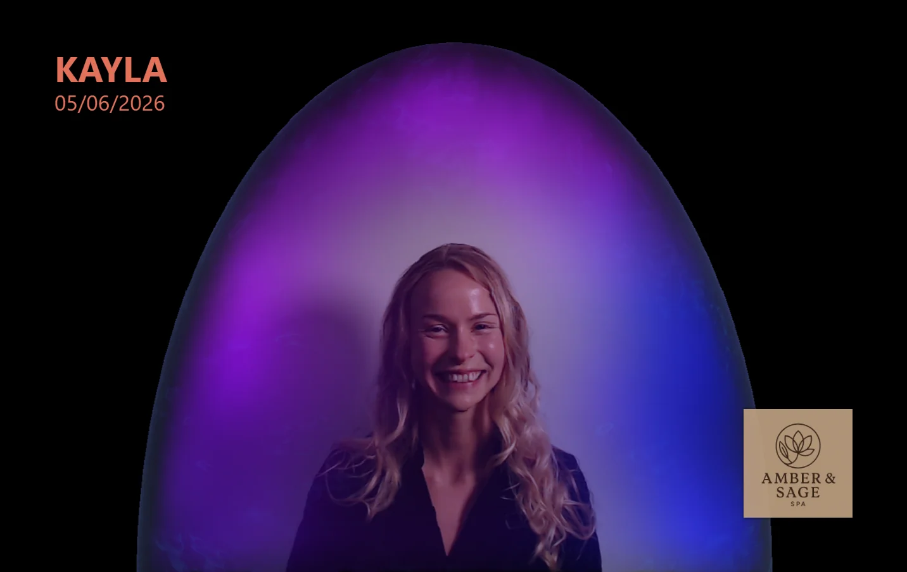

A 15-minute experience that produces a portrait you'll keep forever — captured with the AuraCloud 3D Pro, the most advanced aura imaging system available, here at Amber & Sage Spa.
Book Your Aura Session How It Works
You can get a massage at a hundred places in Chattanooga. You can get a facial at most of them too. But the chance to sit down, place your hand on a biofeedback sensor, and take home an actual portrait of your energy field — that's something different. People come to Amber & Sage for this specifically, often on birthdays, after big life transitions, before weddings, or just because the idea is irresistible.
Some clients arrive curious. Some arrive skeptical. Almost everyone leaves with a printed photo they want to frame, a story they want to tell, and a deeper understanding of what they were carrying that day. The experience is somewhere between a portrait sitting, a meditation, and a really interesting conversation.
We use the AuraCloud 3D Pro, the flagship aura imaging system from Inneractive. It's the same system used by leading wellness studios in New York, Los Angeles, London, and Tokyo. The setup combines a single hand-sensor plate that gathers bioenergetic data — galvanic skin response, temperature, and electrical conductivity — with a high-resolution camera that captures your portrait. Custom software then composites your aura field, chakra centers, and energetic patterns into a layered image around you.
It's beautiful. It's strange. It's a real piece of biofeedback technology dressed up in genuinely lovely visual language. We chose this system because it produces the most detailed, nuanced, and visually rich aura portraits available — not the generic rainbow swirls of the Polaroid-era machines you may have tried at a festival in 1998.
You'll sit comfortably with one hand resting on the sensor. The lighting is set. We'll take a moment to settle — a breath, a quiet pause. The actual capture takes only a few seconds. From there, the software processes your data and renders your aura image on-screen. Most clients gasp the first time they see it.
This is where our two packages diverge.
Our standard session.
Recommended for first-timers.
Anniversaries, mother–daughter visits, sister trips, before-the-wedding moments. We can set up pair sessions where each person gets their own portrait and reading, with the option to see how your auras compare side-by-side. Text us to schedule a pair or small group sitting.
Aura color interpretation is deep and individual — your reading goes far beyond what a quick legend can capture — but here's the rough framework, so you'll have a vocabulary going in.
What's much more interesting than any single color is the combinations — where colors sit relative to your body, how they layer, whether one chakra is dominant, what's emerging vs. receding. That's what we'll walk you through in the session, and what the upgraded PDF report unpacks in real depth.
Birthdays. New jobs. Engagements. The week before a wedding. After a big move. The first year of sobriety. After a diagnosis. After healing. People mark transitions with this all the time, and the resulting photograph becomes a tangible marker of who they were on that day.
You've probably never seen your aura. Most people haven't. It costs almost nothing to find out what it looks like, and what you learn about yourself in the process is usually surprising.
A spa gift card is lovely. An aura session is unforgettable. Gift cards are available for aura sessions and can be combined with any of our other services.
Many regulars book an aura session at the start of a longer visit — aura photo first, then sound bath, reiki, or massage afterward. The aura sets an intention for the rest of the experience.
We use the AuraCloud 3D Pro — the current industry-leading aura imaging system from Inneractive. It combines hand-sensor biofeedback readings with a high-resolution camera to produce a layered portrait of your aura, chakras, and bioenergetic field.
Our basic session takes about 15 minutes from arrival to taking your portrait home. The full reading — which includes a deeper verbal interpretation and a personalized PDF report emailed afterward — takes 25–35 minutes in-spa, plus the report follow-up.
Yes — we can do pair, couples, and small group sessions on request. Each person gets their own individual reading, and the comparison between two auras side-by-side is often the most interesting part of the experience. Reach out before booking so we can set the time aside.
The hardware is real: the AuraCloud 3D Pro measures galvanic skin response, temperature, and bioelectric data from your hand through the sensor. The aura visualization is then generated based on those biofeedback readings combined with established color-meaning frameworks. It's biofeedback meets intuitive interpretation — held with curiosity rather than dogma.
No — and that's part of what makes it fascinating. Your aura is a snapshot of where you are emotionally, physically, and energetically in that moment. People who come back a year later often see notably different portraits that correspond to real life changes.
Anything you're comfortable in — what you wear doesn't change the aura image. Some people like wearing colors that feel like them; some like wearing neutral so the aura colors pop. Up to you.
Yes — aura photography is non-invasive and completely safe during pregnancy. Many expectant moms come in specifically to see how their aura is shifting during pregnancy, and it's a beautiful image to have.
We can — usually for children old enough to sit still for a couple of minutes (typically age 7+). For younger kids, ask us about doing a quick family portrait instead.